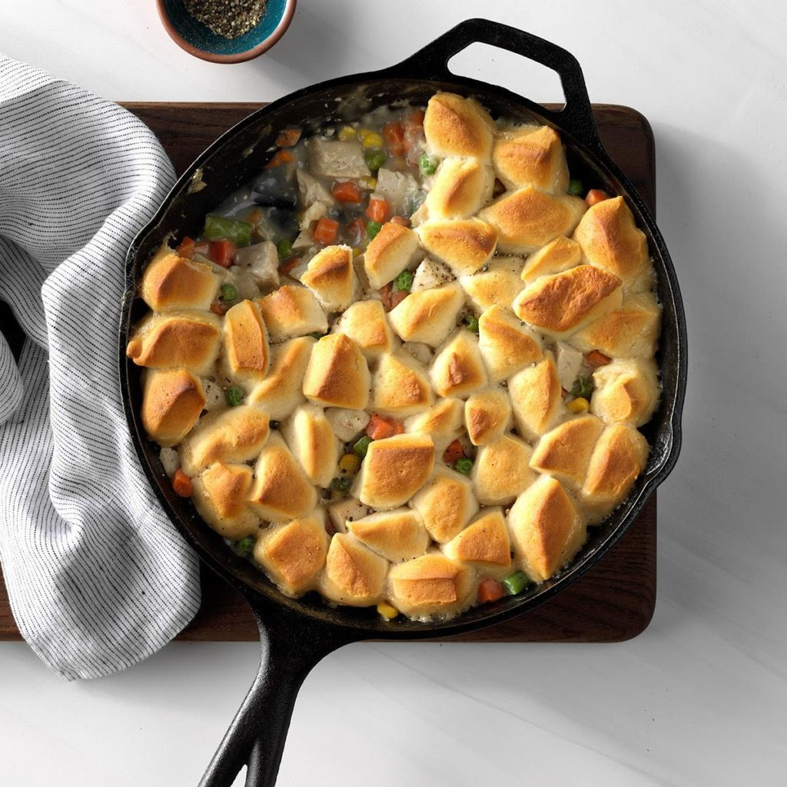

Turkey Biscuit Skillet
My mother always made this while we were growing up. Now I make it for my own husband and kids. I use the small-size biscuits because they brown up so nicely on top. I also add mushrooms to this recipe sometimes because my family loves 'em. —Keri Boffeli, Monticello, Iowa